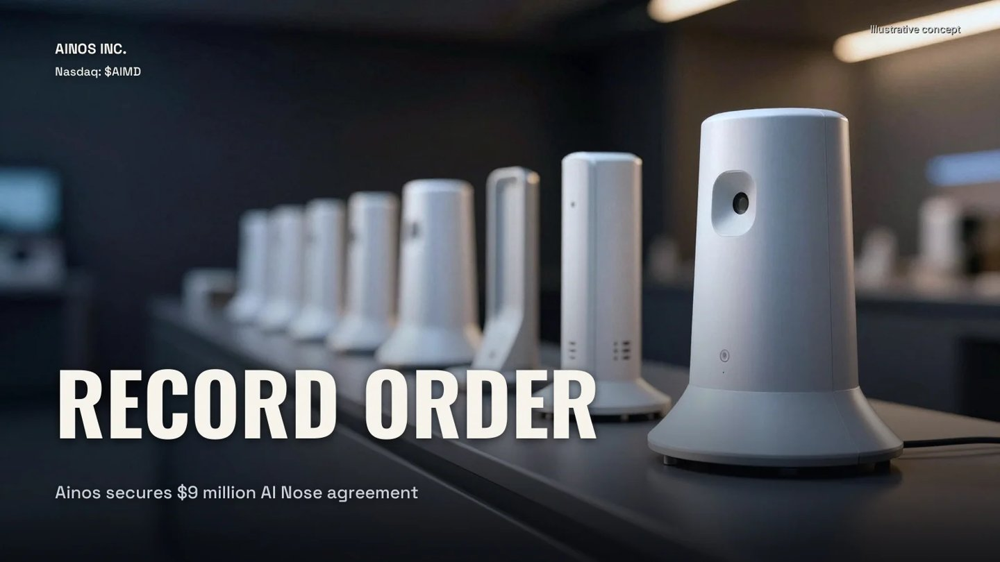

新闻 · 2026-11-24 12:00
AI 拓展“嗅觉”技能：Ainos 斩获 900 万美元追加订单，电子鼻走进芯片工厂“闻”异常
气味感知公司 Ainos 获得日月光追加 900 万美元订单，用于在芯片工厂部署 AI 鼻子系统，此前已签 210 万美元订单并交付 1,400 套，新订单追加 5,000 套，合计 1,110 万美元、6,400 套系统。该系统可检测 ppb 级化学变化，用于监测泄漏、过热及污染，已积累 30 亿真实数据点，正拓展至机器人领域。

来源与核验
单一信源报道，未交叉核实